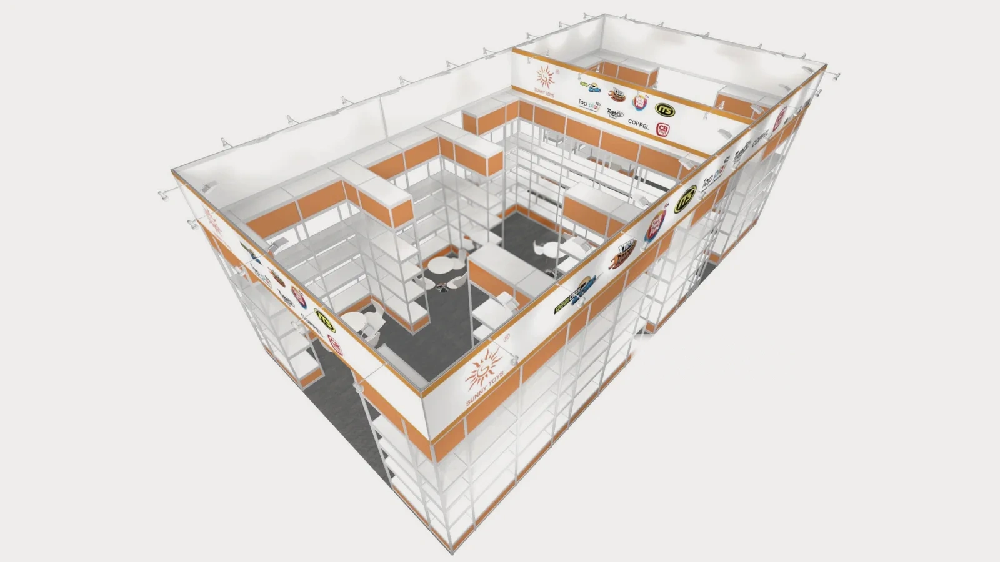
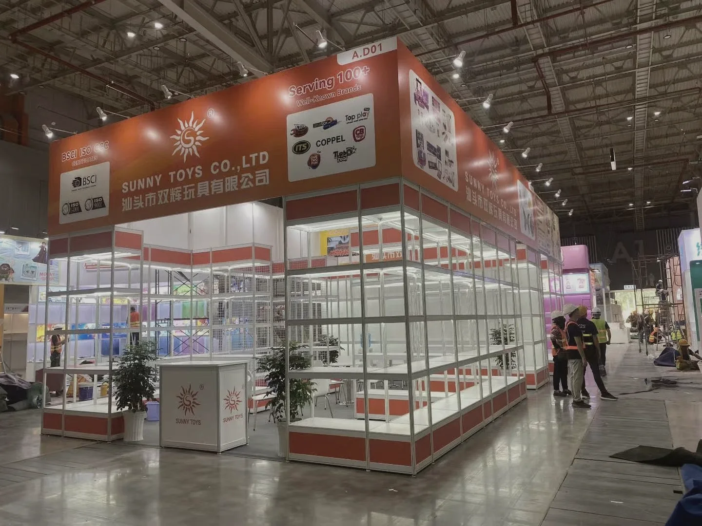
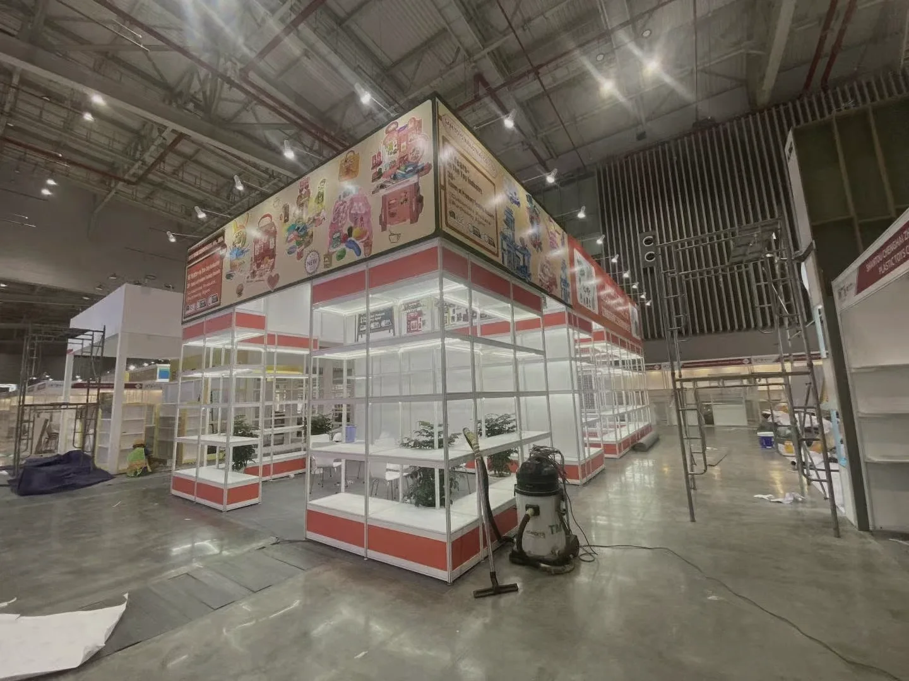
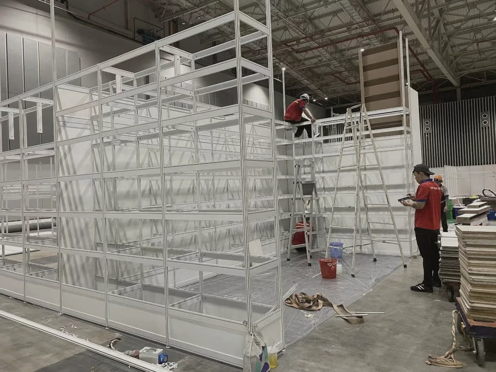

Project Overview
OPEN DISPLAY & BRAND RHYTHM
A 72 m² open display system organizes product presentation, hospitality and brand communication within a clear perimeter structure.
72平方米的开放式展示系统，将产品陈列、商务接待与品牌传播组织在清晰的外围框架中。
Hệ trưng bày mở 72 m² tổ chức sản phẩm, tiếp khách và truyền thông thương hiệu trong một cấu trúc rõ ràng.
Area / 面积72 m²
Location / 地点Vietnam
Year / 年份2024
Discipline / 类型Exhibition Booth Design
Design Concept
VISIBILITY & CIRCULATION
Transparent shelving and multiple open corners preserve visibility from the surrounding aisles. The center remains open for browsing and conversation.
透明展架与多向开放界面保持周边通道的可见性，中央区域留给浏览、交流与自然停留。
Hệ kệ trong suốt và các góc mở duy trì tầm nhìn từ nhiều lối đi, trong khi trung tâm dành cho tham quan và trao đổi.

On-site Gallery / 现场实景 / Hình ảnh thực tế



Design & Technical References / 设计与技术资料 / Tài liệu thiết kế